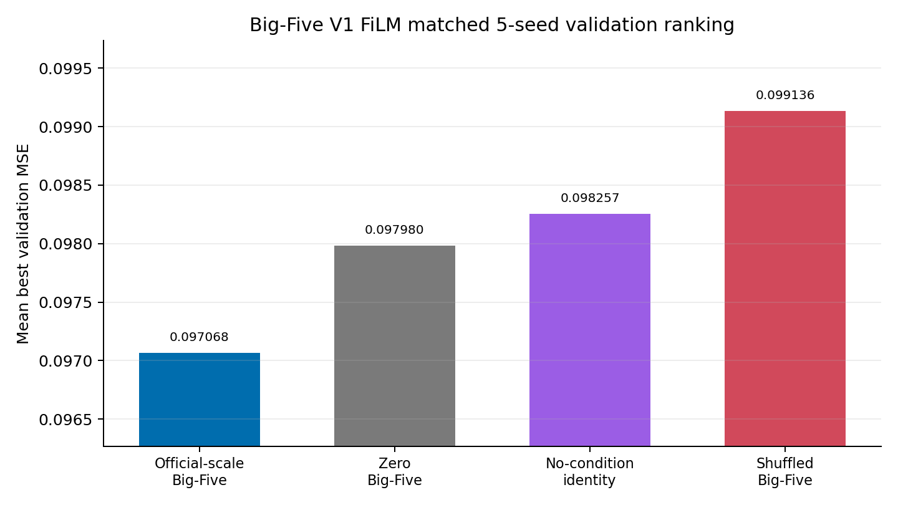
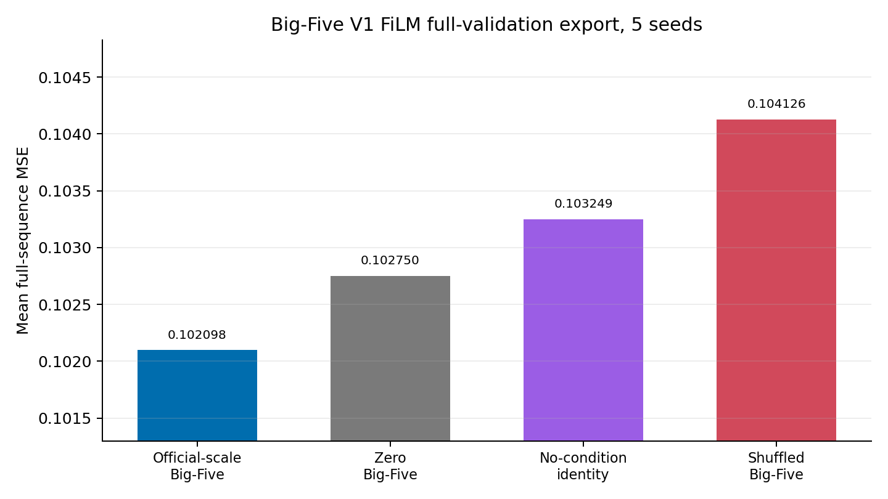

REACT2026 listener reaction generation progress
From runnable baseline to controlled Big-Five evidence
Main updateThis week the project moved beyond smoke tests. Generic V0 is locked as the clean no-personality baseline, and Big-Five V1 now has matched controls, five-seed validation, and full-sequence export checks.
Latest matched-control dashboard, 2026-06-10.
Current research claim
Official-scale listener Big-Five FiLM is the current main local-validation candidate. Here, official-scale means the official 1-5 Big-Five scores are normalized to 0-1; it does not mean an official leaderboard result.
Complete project flow
Click stepsChallenge target
verifiedThe task is to generate ten plausible listener facial reaction sequences from each speaker behaviour stream. The expected output shape is [10, T, 25].
| Input | Target | Safety |
|---|---|---|
| speaker audio features [768] | listener facial attributes [25] | no test personality in training |
| speaker facial attributes [25] | 10 exported reactions | EEG audit-only |
Controlled experiment design
Why this is interpretableThe Big-Five result is not treated as meaningful unless it beats controls that test adapter capacity, random traits, and the no-condition pathway.
Main candidate. Listener Big-Five scaled from official 1-5 range to 0-1.
Checks whether added adapter capacity alone explains the gain.
Checks whether arbitrary trait vectors can create the same improvement.
Checks whether the FiLM pathway helps even without personality input.
Protected baseline
Generic V0 stays unchanged. It remains the clean no-personality and no-EEG internal comparison baseline.
Data boundary
Training uses train personality only. Validation uses validation personality for evaluation checks. Test personality is not used for training or model selection.
Current caveat
Local validation evidence is promising, but the official-style metric path still needs careful alignment before making challenge-level claims. The absolute MSE differences are modest, so the claim is a consistent controlled signal rather than a large performance jump.
Evidence explorer
5 matched seeds
Official-scale listener Big-Five FiLM has the lowest 5-seed mean cropped-validation MSE.
Cropped-validation result
MSE 5/5 winsReadout
Official-scale true Big-Five is best in the 5-seed mean cropped-validation comparison. The key interpretation is strongest against shuffled and no-condition controls; MAE is used as a sanity metric, not as the main control-ordering claim.
Full-validation export check
shape OKThe same branch remains best by mean MSE after exporting full validation sequences. This page is primarily an engineering completeness and submission-shape check: all outputs pass finite checks and required shape checks.

Full-export aggregate
571 samples/runConservative detail
The full-export comparison against zero is directionally positive, but its MSE confidence interval slightly crosses zero. The clean claim should emphasize strongest evidence over shuffled and no-condition controls, not a final proof over every control.
Next research steps
From evidence to final claimThe current result is strong enough to treat official-scale listener Big-Five FiLM as a promising V1 candidate, but it is still local validation and export evidence. The priority is to align evaluation with the newly updated official baseline code and then package the V1 result cleanly.
Official baseline code has been audited and smoke-tested, but full official reproduction is still blocked by missing diffusion / person-specific pretrained checkpoints.
1. Official metric alignment
Compare the current validation/export outputs against the official metric implementation and simple baseline scripts.
2. Baseline paper cross-check
Read the newly released official baseline paper and update claims, caveats, and evaluation wording if needed.
3. V1 candidate package
Freeze configs, seeds, summaries, and exported prediction checks for the current Big-Five V1 candidate.
4. EEG boundary
Keep EEG as audit-only until the facial-reaction result and official-style metric path are stable.
What this page demonstrates
supervisor viewProgress
The project now has a locked clean baseline, a controlled Big-Five V1 comparison, five matched seeds, and full validation export checks.
Evidence
The main V1 branch improves over shuffled and no-condition controls in both cropped validation and full-sequence export summaries.
Caveat
The result is local validation/export evidence. It should not be presented as an official challenge result until the official metric path is aligned. The Big-Five + pooled personal-history V1.2 branch was tested, but current diagnostics were negative, so it is paused rather than scaled.